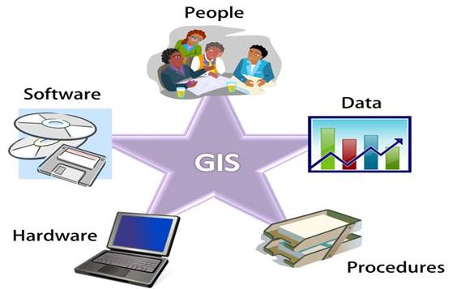

Un sistema de información es un conjunto de componentes interdependientes que trabajan juntos para procesar información y proporcionar resultados útiles.
Los sistemas de información tienen diversos componentes estructurales:
Entradas: métodos y medios por los cuales se capturan e introducen datos, texto, voz e imágenes al sistema de información. En general, se refiere a transacciones, solicitudes, consultas, instrucciones y mensajes.
Modelos: técnicas de modelado utilizadas para el diseño, documentación y especificaciones de los sistemas, como tablas y árboles de decisiones, diagramas de flujo, de jerarquía, causa efecto, entidad-relación, entre otros.
Salidas: son el producto del sistema de Información y pueden estar representadas por documentos para todos los niveles de la gerencia y para todos los usuarios dentro y fuera de la organización. Si el diseño de este componente no satisface las necesidades del usuario, entonces los otros componentes tienen poca importancia.
Hardware: es la parte física del sistema de información, como computadoras, dispositivos de almacenamiento y periféricos.
Software: Es el conjunto de programas y aplicaciones utilizadas para gestionar y procesar la información. Esto incluye sistemas operativos, aplicaciones empresariales, programas de bases de datos y aplicaciones de software personalizado.
Datos: son los elementos de información que se procesan y almacenan en el sistema de información. Esto puede incluir datos de clientes, transacciones financieras, registros de empleados y otra información relevante.
Procedimientos: Estos son los procesos lógicos y los esquemas de trabajo utilizados para acceder, administrar y manipular los datos dentro del sistema de información.
Personas: son los usuarios finales que interactúan con el sistema de información y dependen de él para su toma de decisiones y otras actividades.
Redes: son los medios de transmisión y conexión de la información, como las redes de área local (LAN) y las redes de área amplia (WAN) que conectan los dispositivos y sistemas del sistema de información.
En general, estos componentes trabajan juntos para proporcionar información crítica y procesar datos y resultados útiles para los usuarios finales.
